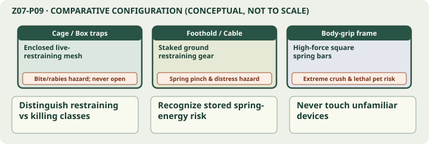

Z07-P09 · Traps and snares · New manuscript
Conceptual Classification of Restraining vs Killing Hazard Classes
Recognize broad historical and regulated mechanical hazard categories visually for bystander safety without providing construction details.
When it applies · Hazard-recognition education for hikers, pet owners, and land stewards.
Equipment · Educational reference only—never touch unknown field hardware.

Actions
- Understand conceptually that regulated capture equipment falls into two broad hazard categories: restraining devices (box/cage traps, footholds, cable restraints) and killing devices (spring-powered body-gripping frames).[L11]
- Recognize that body-gripping frames carry extreme instantaneous closing force capable of breaking human fingers or killing an unleashed dog within minutes, while restraining devices hold an animal or paw under tension.[L10, L11]
- Keep this classification strictly focused on bystander hazard recognition and avoidance—never include mechanical dimensions, wire gauges, trigger notches, or placement procedures.[L11]
Failure recognition · Attempting to poke, test, or spring an unfamiliar metal frame or cable in the woods causes severe crushing hand injuries and illegal equipment tampering.[L09, L11]
Verify · Readers can recognize broad hazard categories conceptually and respond by backing away safely rather than touching hardware.[L09, L11]
Stop or change course · Stop and step back immediately upon spotting any metal jaws, square spring frames, staked cables, or wire boxes in the field.[L09, L10, L11]
Evidence and editorial notes
- L09 · Minnesota DNR · Turn In Poachers (TIP) and Conservation Officer Reporting (Current web edition)
- Section: Reporting illegal, unmarked, or abandoned traps and snares · Conditions: Encountering suspected unlawful, out-of-season, or unsafe sets
Support: Do not touch, spring, or steal equipment; photograph from a safe distance with location coordinates and report to MN DNR TIP or local law enforcement.
Limitations: Tampering with lawful traps can be illegal and risks severe hand injury from stored spring energy. · Conflicting evidence: None noted.
Editorial note: Protects bystanders from injury and legal liability. · Specialist reviewer: Conservation enforcement reviewer
Primary source · checked 2026-11-25 - L10 · Minnesota DNR · Minnesota Trapping Regulations and Fur Harvest Rules (Current web edition)
- Section: Human and pet hazard recognition around lawful trapping areas · Conditions: Walking dogs or hiking in open public-use lands during furbearer seasons
Support: Keep dogs on short leashes on open multi-use lands during autumn/winter trapping seasons, avoid bait piles and shoreline culverts, and carry vet contact info.
Limitations: Body-gripping and cable devices present rapid fatal risk to unleashed pets; prevention via leashing is far safer than emergency release. · Conflicting evidence: None noted.
Editorial note: Core Z07 bystander & pet hazard prevention. · Specialist reviewer: Veterinary and outdoor-safety reviewer
Primary source · checked 2026-11-25 - L11 · Association of Fish & Wildlife Agencies · Best Management Practices for Trapping and Furbearer Welfare (Current web edition)
- Section: Conceptual classification of historic vs regulated capture categories · Conditions: Educational overview of mechanical hazard types without construction specs
Support: Historical and regulated devices fall into restraining (foothold, cage, cable restraint) and killing (body-grip) hazard classes with distinct spring-energy risks.
Limitations: Conceptual awareness supports hazard recognition only and must never include trigger dimensions, wire specs, or placement instructions. · Conflicting evidence: None noted.
Editorial note: Enforces Z07 no-actionable-construction editorial boundary. · Specialist reviewer: Safety and wildlife ethics reviewer
Primary source · checked 2026-11-25
Source lineage · New manuscript (Z07 P18 conceptual classification) · Classification · New manuscript.